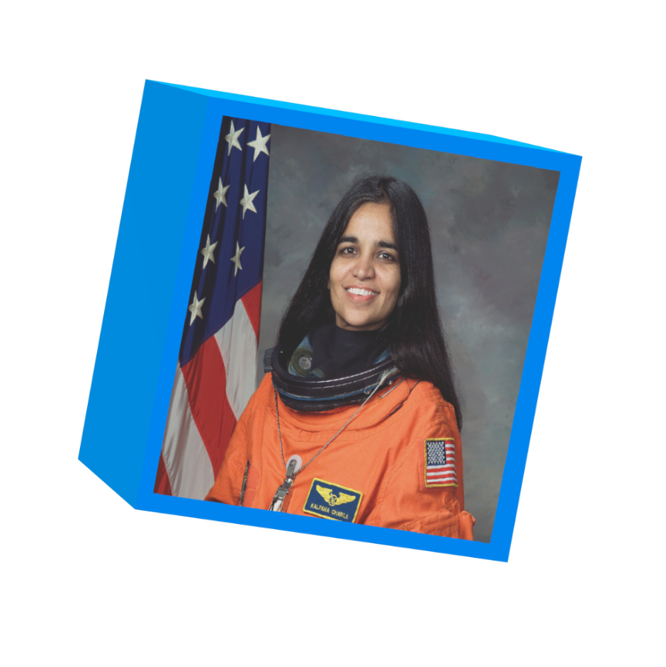
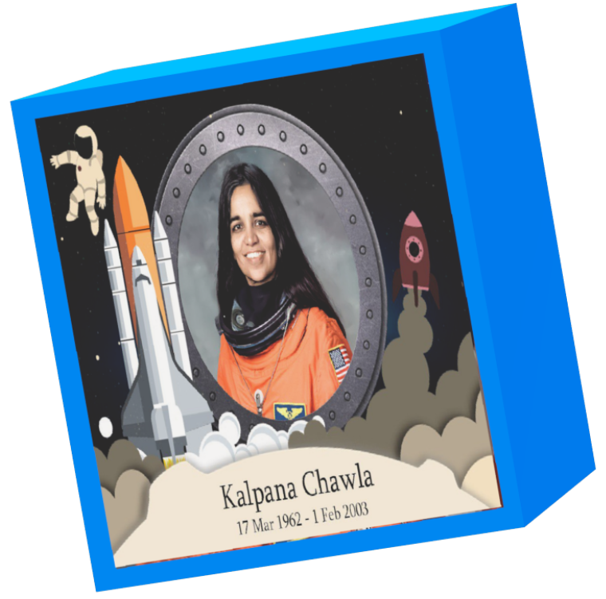

© DiniShiba designs 2021


Meet Kalpana Chawla
Becoming an astronaut doesn't just happen overnight. It takes many years of education and experience to meet the basic qualifications.
"The quickest way may not necessarily be the best."
- Kalpana Chawla

About
Kalpana Chawla was the first Indian woman to have been in space. She was an astronaut and engineer. She was chosen to be a part of the Space Shuttle Columbia team, which flew to space in 1997, as a robotic specialist. However, in 2003, the Space Shuttle Columbia spacecraft crashed during its return to the earth. Chawla was among the crew members who died in the accident. She was married to Jean-Pierre Harrison.
Know MoreKalpana’s
Legacy
The life and career of Kalpana Chawla served as an inspiration to women who dream of being in space someday. Kalpana’s legacy continues even after her death. According to Kalpana’s father, Banarasi Lal Chawla, his daughter’s only dream is for children, especially women, to not be deprived of education.
Know More

Awards &
honours
During the course of her career, Kalpana received the Congressional Space Medal of Honor, NASA Space Flight Medal and NASA Distinguished Service Medal. Following her death, the Prime Minister of India announced that the meteorological series of satellites, MetSat, was to be renamed ‘Kalpana’ in 2003.
Know MoreTime Line
1962
17th March
Birth of Kalpana Chawla
Chawla was born on 17 March 1962, but her official date of birth was altered to 1 July 1961 to allow her to become eligible for the matriculation exam.
1982
June
Early Education of Chawla
As a child, Kalpana liked to draw pictures of airplanes. After getting a Bachelor of Engineering degree in Aeronautical Engineering from Punjab Engineering College, Chandigarh, she moved to the United States in 1982
1983
2nd December
Wedding bells
There’s always time for romance. In 1983, Kalpana tied the knot with Jean-Pierre Harrison, a flying instructor and an aviation author.
1988
April
Newbie at NASA
In 1988, she began working at NASA, where she did computational fluid dynamics (CFD) research on vertical and/or short take-off and landing (V/STOL) concepts.
1997
19th November
First Space Mission
Her first space mission began on November 19, 1997, as part of the six-astronaut crew that flew the Space Shuttle Columbia flight STS-87.
2000
July
Second Flight
In 2000, Chawla was selected for her second flight as part of the crew of STS-107. The mission was delayed several times, and finally launched in 2003.
2003
16th January
Columbia's 28th mission
On January 16, 2003, Chawla finally returned to space aboard Space Shuttle Columbia on the ill-fated STS-107 mission. The crew performed nearly 80 experiments studying earth and space science, advanced technology development, and astronaut health and safety.
2003
1st February
Death of Chawla
Chawla died in the Space Shuttle Columbia disaster which occurred on February 1, 2003 when the Columbia disintegrated over Texas during re-entry into the Earth's atmosphere.

I've landed, let's talk.